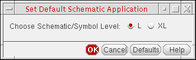
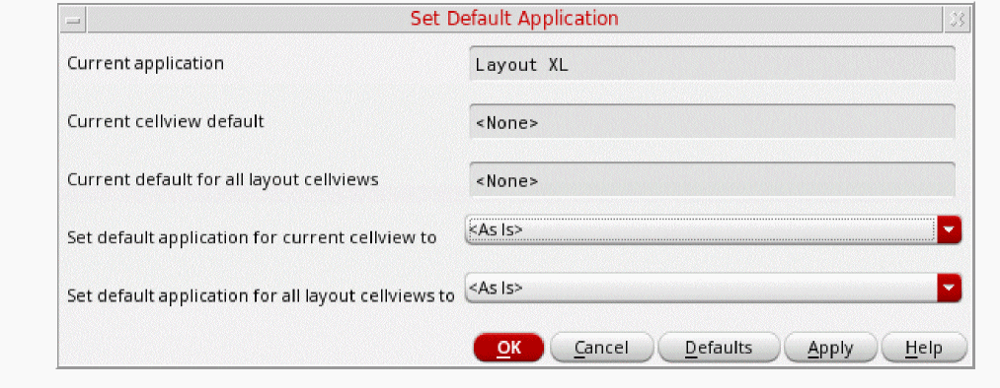

Setting the Default Application for a Cellview Type
To set the default application for a schematic or symbol cellview:
-
In the session window, choose File – Set Default Application.
The Set Default Schematic Application form appears. - For Choose Schematic/Symbol Level, select one of the following application levels:
-
Click OK.
The program uses the application level you selected the next time you open a cellview and writes the environment setting to your.cdsenvfile.
To set the default application for a layout cellview:
-
In the session window, choose File – Set Default Application.
The Set Default Application form appears. - In the Set default application for current cellview to drop-down combo box, select a default application to use when opening the current cellview.
-
(Optional) In the Set default application for all layout cellviews to drop-down combo box, select a default application to use when opening any schematic cellview.
For a specific cellview, the Set default application for current cellview to setting overrides the Set default application for all layout cellviews to setting. -
Click OK.
The program uses the selected application when opening the designated cellview type.
Related Topics
Copying the Current Cellview to a New Session Window
Return to top